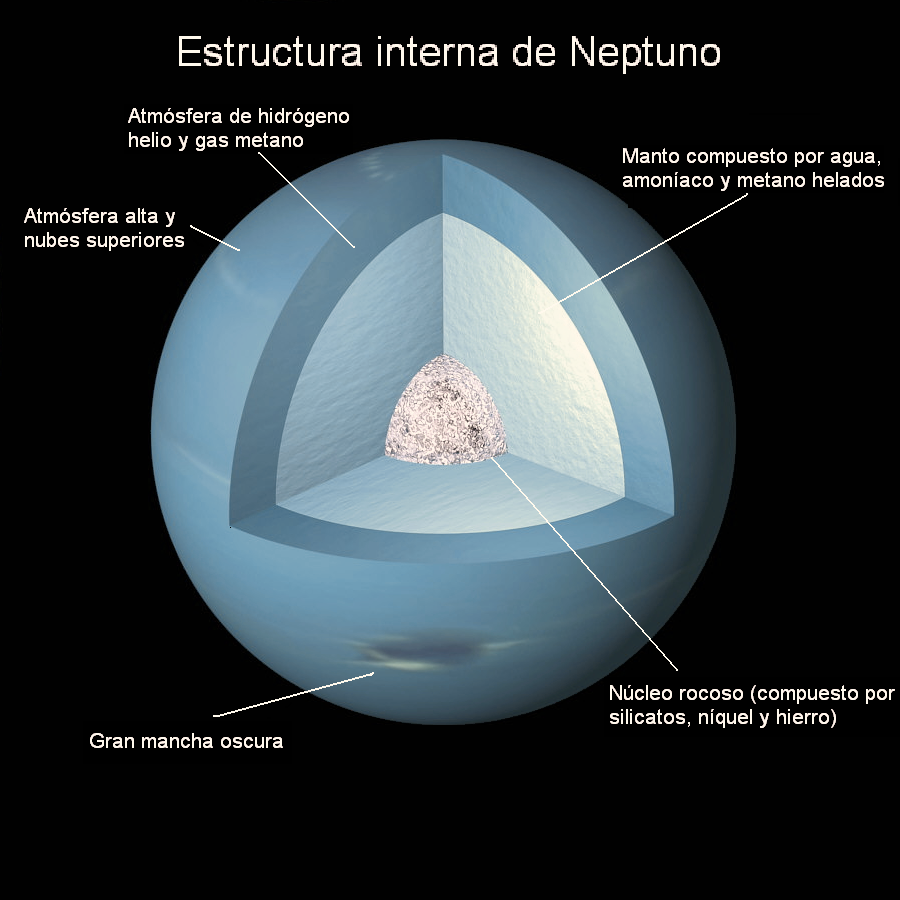
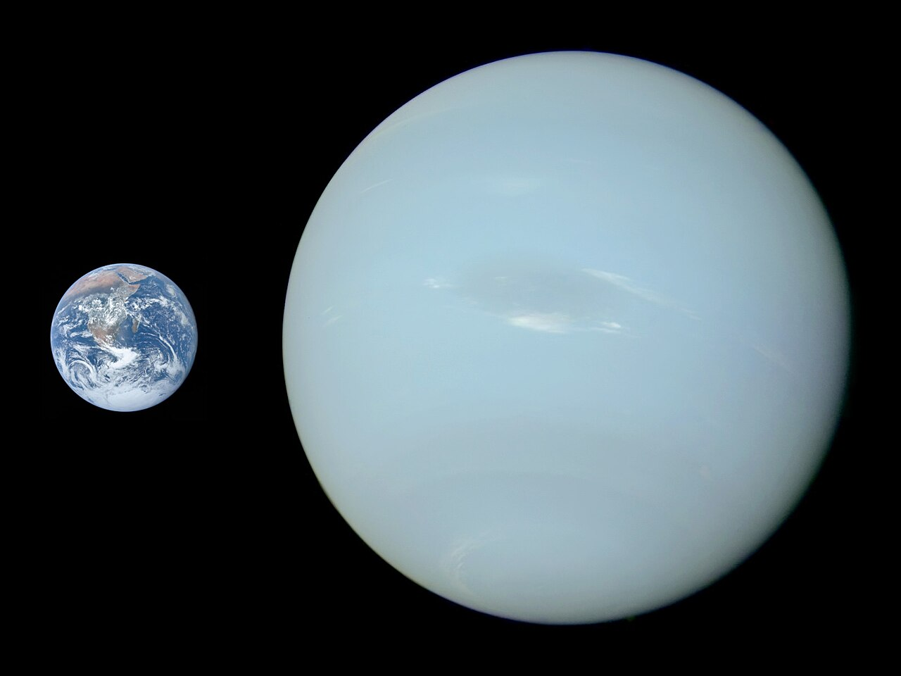

Neptuno es el octavo planeta en distancia respecto al Sol y el más lejano del sistema solar. Forma parte de los denominados planetas exteriores, y dentro de estos, es uno de los gigantes helados y es el primero que fue descubierto gracias a predicciones matemáticas. Debe nombre al dios romano del mar, Neptuno y es el cuarto planeta en diámetro y el tercero más grande en masa. Su masa es diecisiete veces la de la Tierra y ligeramente mayor que la de su planeta «gemelo» Urano, que tiene quince masas terrestres y no es tan denso. En promedio, Neptuno orbita el Sol a una distancia de 30.1 ua. Su símbolo astronómico es ♆, una versión estilizada del tridente del dios Neptuno.
Tras el descubrimiento de Urano, se observó que las órbitas de Urano, Saturno y Júpiter no se comportaban tal como predecían las leyes de Kepler y de Newton. Adams y Le Verrier, de forma independiente, calcularon la posición de un hipotético planeta, Neptuno, que finalmente fue encontrado por Johann Galle, el 23 de septiembre de 1846, a menos de un grado de la posición calculada por Le Verrier. Más tarde se advirtió que Galileo ya había observado Neptuno en 1612, pero lo había confundido con una estrella.
Neptuno es un planeta dinámico, con manchas que recuerdan las tempestades de Júpiter. La más grande, la Gran Mancha Oscura, tenía un tamaño similar al de la Tierra, pero en 1994 desapareció y se ha formado otra. Los vientos más fuertes de cualquier planeta del sistema solar se encuentran en Neptuno.
Características físicas

La estructura interna de Neptuno se parece a la de Urano: un núcleo rocoso cubierto por una costra helada, oculto bajo una atmósfera gruesa y espesa.[21] Los dos tercios interiores de Neptuno se componen de una mezcla de roca fundida, agua, amoníaco líquido y metano. El tercio exterior es una mezcla de gas caliente compuesto de hidrógeno, helio, agua y metano.
Al igual que Urano y a diferencia de Júpiter y de Saturno, la composición de la estructura interna de Neptuno se cree que está formada por capas distintas. La capa superior está formada por nubes de hidrógeno, helio y metano, que se transforman de gas en hielo a medida que aumenta la profundidad.[22] El manto rodea un núcleo compacto de roca y hielo.
Su atmósfera comprende aproximadamente 5 % a 10 % de su masa y probablemente se extiende entre la superficie del planeta hacia profundidades correspondientes a entre 10 % y 20 % de la distancia hacia el núcleo. A esas profundidades, la atmósfera alcanza presiones de aproximadamente 10 GPa, o alrededor de 100 000 veces mayor que la de la atmósfera de la Tierra. Las concentraciones de metano, amoníaco y agua son crecientes desde las regiones exteriores hacia las regiones inferiores de la atmósfera.[23]
Este manto que rodea al núcleo rocoso de Neptuno, es una región extremadamente densa y caliente, se cree que en su interior pueden llegar a alcanzarse temperaturas de 1700 °C a 4700 °C. Se trata de un fluido de gran conductividad eléctrica es una especie de océano de agua y amoníaco.[24]
A 7000 km de profundidad, las condiciones generan la descomposición del metano en cristales de diamante que se precipitan en dirección al núcleo.
Clima

La meteorología de Neptuno se caracteriza por sistemas de tormentas muy dinámicos, con vientos que alcanzan velocidades de casi 600 m/s (2200 km/h), casi llegando a velocidades de flujo supersónico.[39] Más típicamente, mediante el seguimiento del movimiento de las nubes persistentes, se ha demostrado que las velocidades del viento varían de 20 m/s en la dirección este hasta 325 m/s hacia el oeste.[40] En la parte superior de las nubes, la velocidad de los vientos predominantes oscila entre 400 m/s a lo largo del ecuador y 250 m/s en los polos.[29] La mayoría de los vientos en Neptuno se mueve en una dirección opuesta a la rotación del planeta.[41] El patrón general de vientos muestra una rotación adelante en latitudes altas contra la rotación regresiva en latitudes más bajas. Se piensa que la diferencia en la dirección de flujo se debe a un «efecto pelicular» y no se debe a ningún proceso atmosférico más profundo.[7] A los 70° S de latitud, un chorro de alta velocidad viaja a una velocidad de 300 m/s.
Neptuno se diferencia de Urano en su nivel típico de la actividad meteorológica. Voyager 2 observó fenómenos meteorológicos en Neptuno durante su sobrevuelo en 1989, pero no observó fenómenos comparables en Urano durante su sobrevuelo en 1986.[42]
En 2007, se descubrió que la troposfera superior del polo sur de Neptuno era aproximadamente 10 K más caliente que el resto del planeta, que tiene un promedio de aproximadamente 73 K (−200 °C). La diferencia de temperatura es suficiente para que el metano, que en otras partes se congela en la troposfera, escape a la estratosfera cerca del polo.[43] Esta región más caliente se debe a la inclinación del eje de Neptuno, que ha expuesto el polo sur al Sol durante el último cuarto del año de Neptuno, o unos 40 años terrestres. Como Neptuno se mueve lentamente hacia el lado opuesto del Sol, el polo sur se oscurecerá y el polo norte se iluminará, haciendo que la liberación de metano cambie al polo norte.
Debido a los cambios estacionales, se ha observado que las bandas de nubes en el hemisferio sur de Neptuno aumentaron en tamaño y albedo. Esta tendencia se ha visto por primera vez en 1980 y se espera que dure hasta cerca de 2020. El largo periodo orbital hace que las estaciones en Neptuno duren cuarenta años.